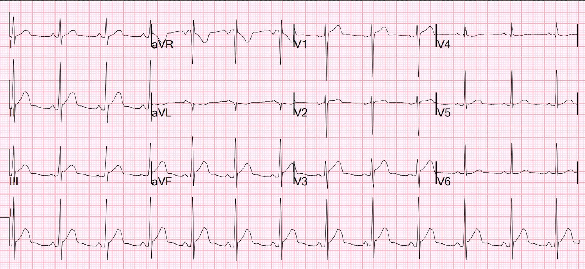
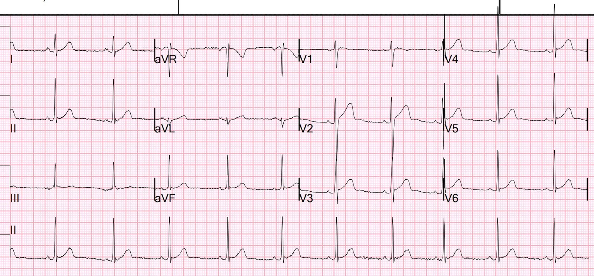
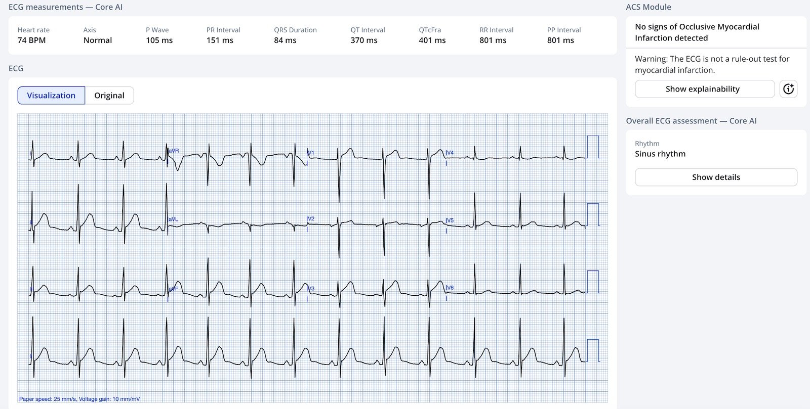
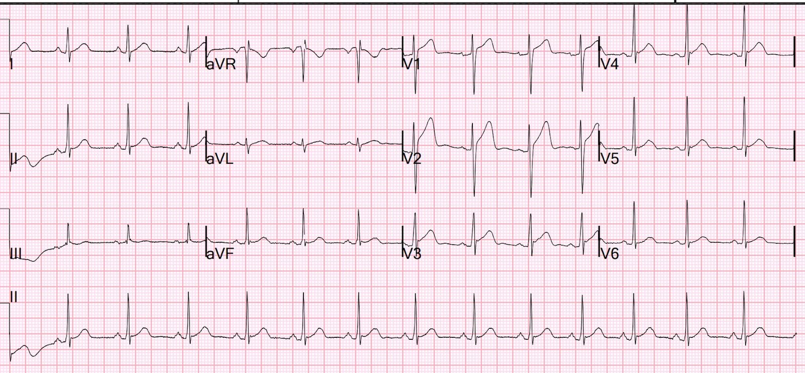
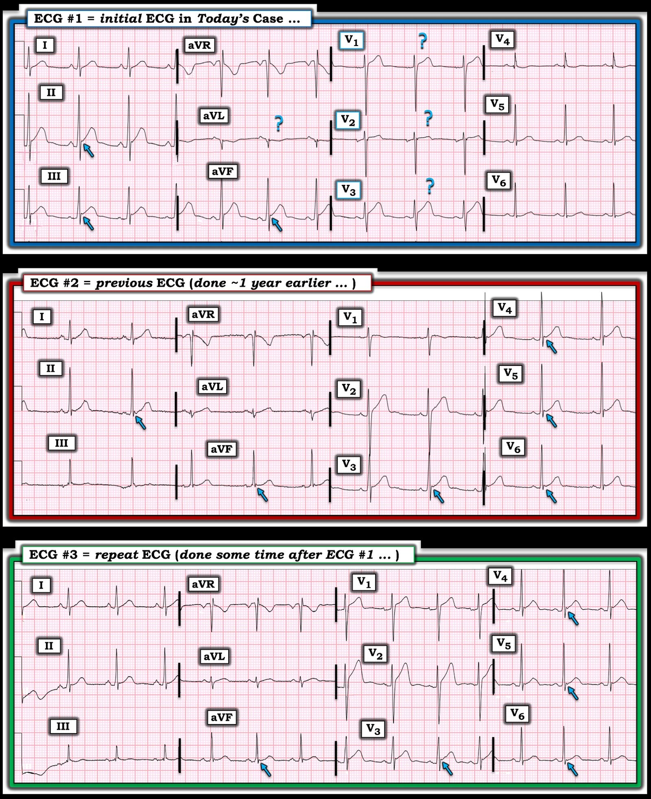

09/01/2025 — Ngất, đau ngực, ST chênh lên ở các chuyển đạo dưới kèm ST chênh xuống soi gương ở aVL
Bản dịch tiếng Việt của bài "Syncope, chest pain, and inferior ST Elevation with Reciprocal ST depression in aVL" – Dr. Smith’s ECG Blog. Giữ nguyên toàn bộ 6 hình ảnh của bản gốc.
Một nam bệnh nhân 26 tuổi đến khám vì ngất và đau ngực. Cơn ngất xảy ra đột ngột, không có tiền triệu, và gây chấn thương đầu kèm rách da đầu.
Đây là điện tâm đồ của anh ấy:


Có ST chênh lên đáng kể ở các chuyển đạo dưới, kèm ST chênh xuống soi gương (reciprocal) ở aVL.
Trông giống một OMI thành dưới
Bạn nghĩ sao?
Smith: Tôi nhận ra đây là một hình ảnh giả STEMI (STEMI mimic). Tôi không lo lắng. Các đồng nghiệp đưa tôi xem điện tâm đồ và tôi nói với họ rằng tôi nghĩ đây là hình ảnh giả. Một sự thật đáng buồn là mặc dù viêm màng ngoài tim có ST chênh lên ở các chuyển đạo dưới hiếm khi kèm ST chênh xuống soi gương ở aVL, ST chênh lên biến thể bình thường đôi khi vẫn biểu hiện ST chênh xuống ở aVL
Anh ấy có một điện tâm đồ cũ được lưu từ một năm trước:


Có một số bất thường trong hoạt hóa nhĩ, nhưng không có ST chênh lên
Liệu điều này có nhất thiết nghĩa là điện tâm đồ mới là do OMI/thiếu máu cục bộ?
Không.
Queen of Hearts nghĩ gì?


“Không có dấu hiệu OMI”
Cơn đau ngực hết sau một thời gian, và một điện tâm đồ khác được ghi:


ST chênh lên gần như đã biến mất.
Chẳng phải điều này nhất thiết có nghĩa là anh ấy đã bị thiếu máu cục bộ sao?
Tiếc là cuộc sống không đơn giản như vậy. Tôi nhận ra đây là một biến thể bình thường. Thật đáng kinh ngạc, Queen cũng nhận ra đây là “Không phải OMI”. Cô ấy rất giỏi.
Troponin lần đầu < 3 ng/L. Troponin sau 2 giờ < 3 ng/L.
Anh ấy được nhập viện để theo dõi và không có rối loạn nhịp nào.
Anh ấy được làm siêu âm tim cản âm chính thức, kết quả hoàn toàn bình thường:
Phân suất tống máu thất trái ước tính bình thường; 69%.
Không phát hiện rối loạn vận động thành thất trái.
Kích thước buồng thất trái bình thường và bề dày thành ở mức giới hạn.
Kích thước và chức năng thất phải bình thường.
Không có bất thường van tim có ý nghĩa huyết động.
Tôi muốn nhấn mạnh rằng không phải tuổi của bệnh nhân khiến tôi nghĩ điện tâm đồ này là hình ảnh giả. Mà là hình thái điện tâm đồ. Queen không biết tuổi của bệnh nhân. Và tôi đã cảnh báo các bác sĩ từ lâu rằng người trẻ vẫn bị nhồi máu cơ tim cấp và OMI.
Đặc biệt, nếu một phụ nữ trẻ bị OMI, cô ấy dễ bị gạt đi với câu “Không, không thể là OMI được!”
Xem tại đây các ca phụ nữ trẻ bị OMI

===================================
BÌNH LUẬN CỦA TÔI, bởi KEN GRAUER, MD (9/1/2025):
===================================
Tôi thấy ca hôm nay khó — và là một ví dụ tuyệt vời cho thấy dù tôi không chắc chắn về chẩn đoán dựa trên bệnh sử và điện tâm đồ ban đầu — việc theo dõi cẩn thận đã mang lại câu trả lời.
- Để thuận tiện so sánh, trong Hình 1 — tôi đã ghép 3 điện tâm đồ của ca hôm nay.
Vì sao tôi không chắc chắn về điện tâm đồ #1
Tôi thấy điện tâm đồ ban đầu và bệnh sử của ca hôm nay là một nghiên cứu về sự tương phản.
- Bệnh sử ngất xảy ra đột ngột, không có tiền triệu, và nặng đến mức gây chấn thương đầu khi ngã — là đáng lo ngại. Nguyên nhân ngất thường gặp nhất ở một người trẻ trưởng thành trước đó khỏe mạnh như bệnh nhân hôm nay — là ngất do phản xạ phế vị (vasovagal). Nhưng ngất do phản xạ phế vị thường có tiền triệu — vì vậy bệnh nhân hôm nay có thể cần được đánh giá thêm ở ngoại trú để tìm rõ hơn nguyên nhân của cơn ngất đột ngột.
- Mối lo ngại về điện tâm đồ ban đầu của bệnh nhân này tăng lên do bệnh sử có “đau ngực” — tuy nhiên: i) Chúng ta không được cho biết chi tiết về cơn đau ngực này (tức là, liệu đây có thật sự là đau ngực mang tính chất do tim hay không?); — nhưng, ii) Ở một nam giới 26 tuổi trước đó khỏe mạnh — ngất không phải là biểu hiện đi kèm thường gặp của nhồi máu cơ tim cấp.
Về điện tâm đồ ban đầu:
- Không thể phủ nhận có gần 2 mm ST chênh lên ở mỗi chuyển đạo dưới. Ngoài ra, có vẻ có đoạn ST thẳng đuỗn ở các chuyển đạo dưới này — điều này làm tăng thêm mối lo ngại ở một bệnh nhân đau ngực.
- Tuy vậy, có những đặc điểm ít gặp hơn trong OMI cấp. Trong đó có khía điểm J kín đáo ở mỗi chuyển đạo dưới (thường là một dấu hiệu lành tính) — với QTc trông tương đối ngắn — và hình dạng ST-T “trông lạ” không hẳn có vẻ cấp tính mặc dù có ST chênh lên.
- Tôi không tin chắc rằng chuyển đạo aVL cho thấy ST chênh xuống “soi gương” — vì vectơ sóng T thường đi sát theo vectơ QRS, nên sóng T đảo ngược rất nông ở aVL, nơi QRS gần như hoàn toàn âm, có thể là một dấu hiệu bình thường.
- Cuối cùng — tôi đã thêm dấu hỏi trên sóng ST-T ở các chuyển đạo V1,V2,V3 vì sự tiến triển của QRS và sóng ST-T không hợp lý. Tức là — sóng R giảm từ V1 sang V2, nhưng sau đó lại tăng từ V2 sang V3 — và đoạn ST đột nhiên trở nên dẹt ở chuyển đạo V2, trước khi đột ngột trở nên khá lớn ở chuyển đạo V3 (điều thú vị là chuyển đạo này biểu hiện mức ST chênh lên tương tự và hình dạng ST-T tương tự như ở các chuyển đạo dưới). Ít nhất — tôi nghĩ có thể đã có đặt sai vị trí điện cực. Nhưng hình dạng sóng ST-T ở 3 chuyển đạo trước này chắc chắn không gợi ý OMI thành sau, vốn là biểu hiện đi kèm rất thường gặp NẾU đang có OMI thành dưới.
ĐIỀU CỐT LÕI về điện tâm đồ #1: Không thể phủ nhận rằng dù bệnh nhân này là người trẻ trưởng thành — anh ấy đến khoa cấp cứu (ED) vì đau ngực và ngất — và điện tâm đồ ban đầu cho thấy gần 2 mm ST chênh lên ở mỗi chuyển đạo dưới.
- Tôi tự hỏi liệu bệnh sử có thêm chi tiết nào gợi ý viêm cơ tim cấp hay không, vì chẩn đoán này có thể “khớp” với các dấu hiệu trên điện tâm đồ #1 hơn là OMI cấp.
- Tôi cảm thấy cần đánh giá thêm trước khi có thể loại trừ hoàn toàn một biến cố cấp.


Tìm được một điện tâm đồ cũ:
So sánh các điện tâm đồ liên tiếp tối ưu nhất là đặt hai bản ghi cạnh nhau, như tôi đã làm trong Hình 1.
- Không thể phủ nhận sự thay đổi hình dạng giữa điện tâm đồ #2 (ghi ~1 năm trước) — và bản ghi ban đầu hôm nay ( = điện tâm đồ #1). Hầu như không có ST chênh lên trên bản ghi cũ — và sóng T dương rõ ở chuyển đạo aVL.
- Điều đáng chú ý là ST chênh lên dốc lên kèm khía điểm J (mũi tên XANH) thấy được trên điện tâm đồ #2 (ghi một năm trước) — trong khi các dấu hiệu này không thấy ở các chuyển đạo V2,V4,V5,V6 của điện tâm đồ ban đầu hôm nay. Xét đến tăng tiến sóng R bình thường — biên độ QRS dồi dào — và 6 mũi tên XANH đánh dấu khía điểm J trên điện tâm đồ #2 — bản ghi cũ này điển hình cho một biến thể tái cực.
Điện tâm đồ được ghi lại:
Điện tâm đồ thứ 3 của ca hôm nay nằm ở phía dưới Hình 1.
- Ngoại trừ việc giờ đây có sóng P xoang bình thường rõ đẹp và tần số tim hơi nhanh hơn — hình thái sóng ST-T trên điện tâm đồ #3 trông rất giống với điện tâm đồ #2 nền.
- So sánh điện tâm đồ #3 với điện tâm đồ ban đầu của ca hôm nay — ST chênh lên ở các chuyển đạo dưới đã hết — sóng T ở chuyển đạo aVL giờ đã dương rõ — và ST chênh lên dốc lên kèm khía điểm J thấy rõ hơn ở các chuyển đạo trước tim.
Tổng hợp ca bệnh:
Ở nam bệnh nhân trẻ trưởng thành này đến khoa cấp cứu vì đau ngực và ngất — ST chênh lên biểu hiện trên điện tâm đồ ban đầu đã hết trong khi anh ấy đang được đánh giá tại khoa cấp cứu.
- Tuy vậy, thay vì là thay đổi tái tưới máu của một OMI đang tiến triển — thay đổi chính giữa điện tâm đồ #1 và điện tâm đồ ghi lại ( = điện tâm đồ #3) là sự tái lập hình ảnh biến thể tái cực đã thấy trên điện tâm đồ nền của bệnh nhân này.
- Troponin âm tính.
- Theo dõi từ xa (telemetry) qua đêm không ghi nhận rối loạn nhịp (điều quan trọng để giảm nguy cơ rối loạn nhịp đáng lo ngại, xét theo lý do vào viện chính của bệnh nhân này là ngất đột ngột không có tiền triệu).
- Siêu âm tim cản âm chính thức cho thấy chức năng thất trái bình thường, không có rối loạn vận động thành.
- Bệnh nhân được cho xuất viện về nhà.
Những điểm cần học:
- Có những đặc điểm trên điện tâm đồ ban đầu của bệnh nhân hôm nay không điển hình cho OMI cấp. Dù vậy — xét bệnh cảnh đến khoa cấp cứu với đau ngực và ST chênh lên — “Thận trọng là phần tốt hơn của lòng dũng cảm” — vì vậy một giai đoạn theo dõi trong khi đánh giá bằng troponin, điện tâm đồ ghi lại và siêu âm tim là cần thiết để đạt được sự yên tâm 100% trước khi cho xuất viện vào ngày hôm sau.
- Hình dạng sóng ST-T trong các hình ảnh tái cực không phải lúc nào cũng cố định. Trái lại, hình dạng sóng ST-T có thể thay đổi trên các bản ghi liên tiếp trong cùng một lần khám tại khoa cấp cứu. Dù đây không phải là hiện tượng thường gặp — thỉnh thoảng bạn sẽ gặp nó (Xem bài ngày 30 tháng Sáu năm 2023 — bài ngày 27 tháng Mười Một năm 2023 — và bài ngày 24 tháng Bảy năm 2013 trên Dr. Smith’s ECG Blog). Như trong ca hôm nay — khả năng hình dạng sóng ST-T của các hình ảnh tái cực thay đổi có thể dễ bị nhầm lẫn với thay đổi điện tâm đồ “động” (dynamic) chỉ điểm một OMI cấp đang tiến triển.
- Greenfield và Rembert đã ghi nhận rằng tới 1/3 số bệnh nhân có ER (tái cực sớm, Early Repolarization) nhưng không có triệu chứng tim mạch — có thể có mức ST chênh lên thay đổi rõ rệt giữa các bản ghi. Những bệnh nhân ER này không có thiếu máu cục bộ — và sự thay đổi mức ST chênh lên chưa được chứng minh là có liên quan đến tần số tim hay biên độ QRS (Variation in ST-Segment Elevation in Early Repolarization: Electrocardiography 40:10,2007).